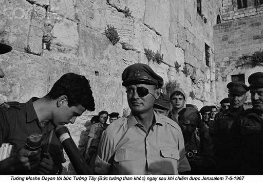

Chương IX (B)

rận Sinai
8 giờ sáng, ngày thứ hai mồng 5 tháng 6-1967, bao nhiêu phi cơ của Israel đều nhất loạt túa lên trời, bay về biên giới Ai Cập. Và chỉ trong tám mươi phút, họ phá được gần hết các phi cơ khu trục, phóng pháo, vận tải của Ai Cập. Các phi trường ở Sinai: El Arich, Djebel Libni, Lir Gafagfa, Bir Tamda và đa số các phi trường ở bờ phía tây kênh Suez bị phá huỷ toàn toàn, không dùng được nữa, cũng không còn một chiếc phi cơ nào có thể cất cánh được nữa. Ba đoàn phi cơ Israel cất cánh cách nhau mười chín phít, bay rất thấp, len qua được những “lỗ hổng” của hệ thống radar Ai Cập rồi liên tiếp nã xuống mọi phi trường Ai Cập thành ba đợt: đợt đầu bằng bom, đợt nhì bằng rocket, đợt ba bằng liên thanh.
Họ đã tính trước: phải mất một giờ, nhà cầm quyền Ai Cập mới biết được việc gì đã xảy ra. Phải mất thêm một giờ nữa. Syrie, Iraq, Jordanie mới được Ai Cập cho biết tin tức. Họ lại mất tuột thòi gian để quân đội chuẩn bị xuất phát nữa. Trong mấy giờ đó Israel đủ tàn phá các phi trường Ai Cập, rồi mà quay trở lại tấn công, không lực của ba nước kia, vì vậy họ chỉ để lại mười hai phi cơ che chở tất cả thành thị, cơ quan, đồn ải trong nước
Họ gan thật! Họ cả gan vì họ đã tính đúng và họ đã chuẩn bị kỹ lưỡng từ lâu, luôn trong mấy năm, họ đã luyện cho không quân của họ ở trong tình trạng báo động suốt ngày, suốt đêmvà ba trăm sáu mươi lăm ngày một năm.
Họ chỉ tấn công phi trường, không hề tấn công nhà máy, cầu cống, các mục tiêu quân sự khác, ngay tới đập Assouan mà Ai Cập lo bị phá nhất, họ cũng không đụng tới.
Họ làm bất thình lình, tới nỗi nông dân Ai Cập đưa tay vẫy họ khi họ bay qua, tưởng phi cơ của mình. Tới phi trường Le Caire, họ bay chỉ cách mặt đất có ba chục thước, nhưng họ được lệnh không tấn công thành phố đó. Theo Samuel Seguev.
Kết quả ngoài sự ước mong của họ: các phi trường Ai Cập thành những nhị tì phi cơ, xác phi cơ nằm ngổn ngang, nhiều chiếc mới tinh, chưa sử dụng lần nào.
Tất cả thế giới đền ngạc nhiên, không hiểu tại sao phi công Israel nhắm trúng đích một cách lạ lùng như vậy. Báo chí hồi đó đồn rầm lên rằng Israel có một khí giới bí mật nào đó. Chính Louis Garros trong bài báo đã dẫn cũng bảo, không còn ngờ gì nữa, chính nhờ khí giới bí mật đó nên họ nới có được kỳ công ấy. Có người lại đoán trong khí giới đó là một thứ bom nổ chậm nó xuyên qua lớp dầu hắc trải trên các đường bay, chứ không dội lên, rồi vài phút sau mới nổ. Nhưng Samuel Seguev trong “La guerre de six jours” bảo người đã điều tra, xem xét các tấm hình, thấy các sự tàn phá đều do bom và rocket thường, chẳng có khí giới nào bí mật cả.
Vậy sau tám mươi phút, tướng Hod - tư lệnh không quân Israël - báo tin thắng trận cho tướng Rabin, tham mưu trưởng. Chỉ có mấy chữ: “Sinai đã trống không”.
Dĩ nhiên, ta phải hoàn toàn câu đó là “ không phải Sinai trống không”. Vì cuộc lục chiến lúc đó mới bắt đầu.
Cũng như trận 1956, lần này quân đội Israël tấn công Sinai theo ba trục:
- Trục Bắc, tướng Tal tấn công Rafiah, cái nút của Gaza, rồi một mặt tiến chiếm hết miền Gaza, một mặt tiến chiếm hết miền Gaza, một mặt tiến qua Tây, theo đường biển, tới El Arich.
Quân Ai Cập chống cự mãnh liệt ở Rafiah và El Arich. Israël phải dùng đội nhảy dù, thiết giáp xa, thiệt hại hơi nhiều, nhưng cuối ngày thứ nhất tới được El Arich, cuối ngày thứ ba tới bờ kinh Suez, ngày thứ tư tới Talata, hợp với đạo quân của trục trung tâm.
- Trục trung tâm. Miền này là miền đồi cát. Quân Israël do tướng Yaffee chỉ huy, ngày đầu tấn công Abou Agheila, ngày sau tới Djbel Libni, ngày thứ ba tới Gafgafa ở đây có đụng độ kịch liệl, và ngày thứ tư tớỉ Talata, hợp với đạo quan của trục Bắc.
- Trục Nam do tướng Charon chỉ huy, ngày thứ nhì chiếm Kuseima, ngày thứ ba tới Nakhi giữa bán đảo, ngày thứ tư tới Mitla.
Ba đạo quân đó tới kinh Suez, để lại một số quân chiếm đóng, rồi theo bờ vịnh Suez mà tiến xuống cực nam bán đảo tới El Tour thì gặp một đạo thủy quân tiến theo vịnh Akaba.
Vậy là ngày 8-6-1967, toàn bộ bán đảo Sinai đã bị chiếm, đồn Charmel Cheik ở cực nam lọt vào tay thủy quân Israel, eo biển Tiran và vịnh Akaba được giải toả. Năm giờ sáng hôm sau, sau tám mươi tám giờ chiến đấu không ngừng, viên Tổng tư lệnh mặt trận phương Nam, tức mặt trận Sinai, tướng Gavish, đánh điện cho Tổng tham mưu trưởng Rabin:
“Quân lực chúng ta đóng ở bờ kinh Suez và Hồng Hải. Tất cả bán đảo Sinai ở trong tay chúng ta. Chiến dịch Sinai kết thúc!”.
Ngày hôm trước Nasser đã thấy không thể tiếp tục cuộc chiến đấu được nữa. Mohamed Awad El Kouni khóc nấc lên khi báo cho Hội đồng bảo an Liên hiệp quốc rằng chính phủ ông bằng lòng ngưng chiến.
Quân đội Ai Cập đã anh dũng chiến đấu ở vải nơi, nhất là ở Abou - Agueila, nhưng xét chung tinh thần rất kém; họ đầu hàng hoặc chạy trốn cả đám, lột áo cởi giày mà chạy (có chỗ chất cả vạn đôi giày) để lại cho Israel từng đống, hàng kho khí giới, cả những xe thiết giáp, những cỗ pháo 160 ly mới nhất của Nga mà họ chưa hề dùng tới (6), cả những dàn hoả tiễn y nguyên nữa.
Lỗi không phải tại họ, họ không được khéo chỉ huy, có kẻ mới nhập ngũ, chưa biết sử dụng khí giới, có kẻ lại phải nhịn đói nhịn khát ba ngày, và quân Israel cho nửa ly nước, thì họ mừng đến nhỏ lệ.
Kết quả: phía Ai Cập: 10.000 quân bị giết, 5.000 bị cầm tù, trong số đó có 9 tướng lãnh và 350 cấp tá, uý. 400-500 phi cơ bị phá huỷ, 400 xe tăng, bị tan nát, 300 còn y nguyên, lọt vào tay quân đội Israel.
Phía Israel: 275 người bị giết, 800 bị thương, 61 xe tăng bị phá huỷ.
Trận Jordanie
Vì ngày đầu đem toàn lực để diệt chủ não của khối Ả Rập tức Ai Cập, nên ở phía đông, tức trên mặt trận Jordanie, Israel không thể mở cuộc tấn công ồ ạt ngay được, với lại chính bộ tham mưu Israel không ngờ rằng Jordanie tích cực tham chiến.
Từ trước, vua Hussein vẫn thân Tây phương, nhận sự giúp đỡ của Mỹ, Anh về khí giới, quân nhu, nhờ Anh, Mỹ huấn luyện, tổ chức các binh đoàn.
Mãi đến ngày 31-5-1967 mới đứng về phe Nasser.
Vậy thì người ta có thể đoán rằng Hussein sẽ miễn cưỡng giao chiến để Nasser khỏi trách vào đâu được, rồi chờ coi tình hình.
Lời tiên đoán đó sai. Quân Jordanie đã mở cuộc tấn công gần Tel Aviv trong khi cả lữ đoàn nhảy dù Do Thái đã lên hết phi cơ vận tải để sắp bay sang đánh tập hậu qua Ai Cập trên bán đảo Sinai: Lữ đoàn đó đành rời khỏi máy bay, đáp xe bus đã trưng dụng mà tiến về phía Jerusalem. Tiếp theo đó một lữ đoàn thiết giáp kéo đến tăng viện.
Cuộc chiến đấu ở Jerusalem rất khó khăn vì phải chiếm từng khúc đường, từng căn nhà, nhất là phải tránh đền Jerusalem và các di tích cổ. Hai bên đều tỏ ra dũng cảm. Rốt cuộc, ngày 7-6-1967 quân Israel cũng chiếm được thành cũ, tới “Bức tường Than khóc” mà từ 20 năm qua không một người Do Thái nào được đặt chân tới.
Hàng trăm lính Do Thái chen chúc nhau trên khoảng đất chữ nhật dưới chân tường, áp má vào bức tường mà nước mắt ròng ròng. Một là quốc kỳ Israel nền trắng, hai xọc xanh dương, và một ngôi sao David cũng xanh dương được kéo lên ở trên bức tường và mọi người đều la lớn: “Năm nay về Jerusalem!”.
Dayan, Rabin, Eshkol đều tới. Họ đều tuyên bố với quân đội rằng sẽ quyết tâm giữ Jerusalem, không khi nào chịu rời khu đất có bức tường Than khóc đó nữa. Các tôn giáo khác, sẽ được tôn trọng, tín đồ Ki-tô giáo và Hồi giáo, được tự do thờ phụng, nhưng Jerusalem sẽ không bị chia cắt như trước nữa.
Trong khi đó, bộ chỉ huy Israel phái một cánh quân đánh chiếm Naplouse, Djenine và tiến tới bờ sông Jourdain: Ngày 8-6, Israel chiếm được Jericho, một thị trấn cổ nhất thế giới, nằm trên đường từ Jerusalem tới sông Jourdain, cách sông Jourdain sáu bảy cây số.
Thế là Israel đã chiếm trọn hệt đất của Jordanie nằm ở phía tây sông Jourdain, miếng mẻ trên lưỡi dao Israel đã gắn lại được.
Buổi chiều 8-6-1967, vua Hussein tuyên bố với quốc dân, giọng thực cảm động:
“Quân đội chúng ta đã đổ máu để bảo vệ từng thước đất của non sông và máu của họ còn chưa khô.
“Bây giờ sự tình đã như vậy rồi. Lòng tôi nát ngấu khi nghĩ đến những chiến sĩ đã gục trên chiến trường...
“Anh em đồng bào, hình như chúa Allah đã bắt dòng dõi của tôi phải đau khổ và hy sinh bất tuyệt cho dân tộc, tai hoạ chúng ta phải chịu hôm nay lớn hơn tất cả những cái người ta có thể tưởng tượng nổi. Nhưng dù có mênh mông tới đâu, dù phải trả một giá nào đi nữa, thì chúng ta cũng sẽ cương quyết xây dựng lại những gì chúng ta đã mất…”.
Kết quả: phía Jordanie: trên 6.000 người tử thương hoặc mất tích (có lẽ chỉ có độ 1.500 tử thương, còn lbao nhiêu là đào ngũ), 760 bị thương, 460 bị cầm tù, khoảng 100 chiến xa bị phá huỷ (một phần ba tổng số) phi cơ hình như bị huỷ gần hết.
Phía Israel: 350 tử thương, 300 bị thương.
Trận Syrie
Tại mặt trận phía bắc, tức Syrie, chiến lược hoàn toàn khác. Nhà cầm quyền Syrie hăng chiến đấu hơn hết và tin sẽ thắng vì lực lượng khá mạnh: 75.000 quân, 400 thiết giáp xa, lại được lợi thế là cao nguyên Golan hiểm trở và có nhiều thành luỹ kiên cố do Đức rồi Nga xây cất, khí giới tối tân và đầy đủ. Nhưng Syrie có nhược điểm rất lớn: vì đường lối chính trị, tình hình luôn xáo động, có những cuộc thanh trừng liên tiếp trong giới chỉ huy từng có kinh nghiệm: chỉ riêng đầu năm 1966, đã có ít nhất là 87 sĩ quan bị giáng chức hay huyền chức, bọn ở dưới lên thay hầu hết thiếu khả năng.
Mặc dầu vậy, chiến trường Syrie cũng làm cho Israel tổn thất nhiều nhất tuy ngay từ lúc đầu họ đã làm chủ không phận.
Quân Israel phải dùng chiến thuật: đánh tiêu hao và tấn công bất ngờ. Họ dùng oanh tạc cơ dội bom dồn dập vào các phòng tuyến địch, nã đại bác vào hậu tuyến địch trong ngót năm giờ liền, rồi từ thung lũng sông Jourdain như một cái hố vừa rộng vừa sâu, họ phải đánh thốc tên dốc cao, dưới hoả lực xối xả của địch, phải vượt qua các bãi mìn, lưới thép gai của nhiều công cụ kiên cố.
“Chiếc búa tạ” của Israël giúp cho Israel xâm nhập được một vài nơi, rồi từ đó tản ra, chuẩn bị cho các cuộc tiến quân của đoàn thiết giáp.
Một trung đội của Israël sau một ngày giao phong chỉ còn có hai người là đủ sức chiến đấu.
Kết quả, phía Syrie: 200 chết, 5.000 bị thương, 80 xe tăng bị huỷ, 40 bị cướp (tổng số là 300).
Phía Israël: 115 chết, 306 bị thương.
Họ chiếm được một vùng rộng 20-30 cây số bên bờ phía đông sông Jourdain. 18 giờ rưỡi hôm 10-6-1967, theo lệnh Liên hiệp quốc hai bên ngưng chiến, nhưng mấy giờ trước đó, bộ trưởng ngoại giao của Syrie là Ibrahim Makhous còn tuyên bố với thế giới: “Syrie đã thua một trận, chứ không thua một cuộc chiến tranh, sở dĩ thua là vì không được không quân yểm hộ, không lực của Ai Cập đã tan rã từ ngày đầu”
Sau cùng, chúng ta nên ghi thêm: hải quân Israël đã hoạt động trên hai mặt: Địa Trung Hải và Hồng Hải, chiếm được Charm El Cheik ở cực nam bán đảo Sinai, giúp cho lục quân mau hoàn thành được nhiệm vụ.
Nguyên nhân thắng lợi của Israel
Nhiều người đã bàn về nguyên nhân thắng lợi của Israel, hoặc trong một cuốn sách như “La guerre de six jours” của Seguev, hoặc trong một bài báo như Léo Heiman trong tuần san “Military Review (7) do Việt Tấn Xã dịch lại số 6.146, ngày 9-11-1968, và Louis Garros trong số Historama đã dẫn.
Chúng tôi xin thu thập và xếp đặt lại thành bốn nguyên nhân dưới đây:
1. Israël có những người cầm quân tài giỏi.
Trước hết ta nên bỏ cái thành kiến rằng lực lượng Ả Rập mạnh gấp 10 gấp 20 lân Israël. Xét về dân số thì như vậy thật nhưng xét về lực lượng chiến đấu, nghĩa là quân số thì lực lượng hai bên ngang nhau.
Theo Léo Heiman, Israel đã động viên được từ 250.000 tới 300.000 người: Phía Ả Rập tuy có 400.000 - 500.000 quân, nhưng thực sự chỉ có khoảng 300.000 quân dự chiến thôi.
Nếu ta kể cả những dân chúng Israël đã gián tiếp dự vào chiến cuộc bằng cách giúp đỡ nhân lực xe cộ, dụng cụ lặt vặt, thì cán câu chúc hẳn về phía Israël.
Về khí giới, Ả Rập có nhiều hơn, nhưng ai cũng nhận những phi cơ Mirage của Pháp rất tốt, trong trận đó tỏ ra lợi hại hơn các phi cơ chiến đấu của Nga, Tiệp chế tạo.
Vậy về lực lượng vật chất của hai bên, ta có thể nói là xuýt xoát như nhau.
Ưu điểm thứ nhất của Israël là có được những nhà cầm đầu tài giỏi, đặc biệt là Moshé Dayan - Bộ trưởng quốc phòng và Yitzhak Rabin - Tổng tham mưu trưởng.
Moshé Dayan đã ở trong quân đội Anh chiến đấu với Đức trong thế chiến thứ nhì, rồi chỉ huy trong chiến tranh Độc lập của Israël năm 1948-1949, làm tư lệnh quân lực Israël từ 1954 tới 1958, nổi tiếng là bách chiến bách thắng.
Ông chủ trương buộc các sĩ quan từ các tướng tá trở xuống luôn luôn phải xung phong trước quân sĩ để nêu gương, vì vậy, mà tỉ số sĩ quan tử thương của Israël rất cao. Tướng phải ở tiền tuyến chứ không được chỉ huy một tổng hành dinh ở hậu tuyến. Mọi việc chuyển quân của lực lượng trừ bị, mọi việc phối hợp đều có thể để các chỉ huy phó đảm nhiệm.
Tướng Yitzhak Rabin thuộc thế hệ trẻ, sinh năm 1922 đã được huấn luyện trong một Kibboutz rồi trong tổ chức Hagana, năm 1946 bị quân Anh bắt giam, ông đã dự nhiều trận đánh trong hai chiến dịch 1948 và 1956. Có tài tổ chức, hiểu rõ tất cả các vấn đề quân sự, tia mắt lúc thì như lửa, lúc thì như băng, chí quyết thắng không kém Moshé Dayan mà ông trọng như sư phụ.
Ông chủ trương rằng chiến thắng mà chưa hoàn bị là vì chưa hoàn toàn tiêu diệt được địch, cho nên ông rèn luyện quân sĩ thật thành thục để quyết hạ cho kỳ được các vị trí kiên cố. Ngoài ra, tướng Yigael, tướng Mordekhai Hod, tư lệnh không quân cũng đều có tài ba.
2. Tinh thần quân đội Israel rất cao
Dân tộc, nào thời nào cũng có những vị anh hùng, và trong chiến tranh nào cả hai bên cũng có những người cảm tử. Những gương hy sinh mà người ta thường kể về phía Israël - như một viên sĩ quan Israël bị thương ở vai bên phải, mà vẫn sử dụng liên thanh bằng tay trái, hoặc nhiều sĩ quan thấy chiến xa của mình hư rồi, nhảy qua chiến xa khác để tiếp tục chiến đấu, những y sĩ bị thương băng bó qua loa cho mình rồi tiếp tục săn sóc thương binh tới khi kiệt sức mới chịu về hậu tuyến… những gương hy sinh đó chắc chắn bên Ả Rập cũng có, trong trận đánh nào cũng có.
Nhưng ta cũng phải nhận rằng trong trận 1967; tinh thần Israël cao hơn Ả Rập. Ả Rập chiến đấu cho một tin tưởng, tin tưởng ở Chúa, ở tinh thần dân tộc; Israël chiến đấu cũng cho một tin tưởng như vậy, lại còn cho sự tồn vong của họ nữa. Họ bị đặt vào chỗ chết, nên phải tìm một lối sống, họ hiểu rằng nếu họ không thắng thì họ sẽ bị tiêu diệt: họ ở cái thế ba phía là địch, một phía là biển, nên họ tự nhiên thành cảm tử hết. Lại thêm sĩ quan của họ làm gương cho họ; họ tin phục cấp chỉ huy, ngay từ ngày đầu đã thấy nắm chắc phần thắng trong tay cho nên càng hăng hái, coi thường gian nan như vậy họ càng dễ thắng.
3. Quân đội Israel được huấn luyện kỹ lưỡng
Một ưu điểm lớn của Israel là sĩ tốt có trình độ văn hoá cao hơn sĩ tốt Ai Cập. Bảy chục phần trăm người Ả Rập mù chữ, mà mù chữ thì không thể là chiến sĩ tốt được. Tôi không biết rõ tỉ số mù chữ ở Israel năm 1967 là bao nhiêu, nhưng có thể tin rằng nó rất thấp, vì từ 1949 chính quyền Israel đã tận lực khuếch trương nền giáo dục. Chúng ta nên nhớ mở nhiều trường là một cách bảo vệ quốc gia. Dân chúng có học thì mới biết chiến đấu, chẳng những họ hiểu mau mà còn có sáng kiến. Trong quân đội Israel, từ cấp trên xuống cấp dưới cấp nào cũng phải xung phong mà cấp nào cũng được có sáng kiến trong binh động: Mục tiêu định rõ rồi, họ phải tự lực thực hiện lấy, không chờ đợi chỉ thị tỉ mỉ của bộ Tổng tham mưu nữa. Họ phải xoay xở lấy, nhưng họ vẫn có kỷ luật tự họ chấp nhận. Ta nên nhớ trong giới binh lính và hạ sĩ quan của họ, có nhiều nhà trí thức, kỹ sư, giáo sư, luật sư, giám đốc xí nghiệp mà trong thời chiến, bảng giá trị lật ngược hẳn, những nhà đó vui vẻ tự đặt mình dưới sự chỉ huy của những thanh niên mới ở các Kibboutz ra, học ít nhưng chiến đấu giỏi. Đơn vị nào của họ cũng có người biết sửa xe cộ, súng ống, cả phi cơ nữa, nên tiến quân hoài không phải ngừng.
Quân đội Ả Rập trái lại, không có học mà lại không được huấn luyện kỹ. Nhiều binh sĩ chưa biết cách sử dụng súng ống. Họ dẻo dai, giỏi tự vệ, nhưng không biết quyền biến. Cấp chỉ huy của họ thiếu sáng kiến, thiếu tinh thấn trách nhiệm, chỉ theo đúng chỉ thị, khi thấy Israel dùng một chiến thuật mới mẻ thì lúng túng, không nhanh trí, không biết đối phó lại kịp. Chiến tranh đó là chiến tranh chớp nhoáng, cần phải thần tốc, uyển chuyển mà tổ chức của họ nặng nề, tinh thần của họ thủ cựu, vẫn giũ chiến thuật, cả những nhược điểm của họ từ năm 1956.
4. Sau cùng nguyên nhân thứ tư là chiến thuật và kỹ thuật của Israël tài tình, mới mẻ, linh động
Ở trên tôi đã nói, kỹ thuật tình báo của họ đã giúp cho không quân biết rõ từng chi tiết về các phi trường Ai Cập nên hễ dội bom là trúng, nhờ vậy mà hai giờ sau khi khai chiến, phần thắng đã về họ.
Cơ quan tình báo của Ả Rập kém xa, Nasser tin ở sức mình, chưa chuẩn bị kỹ mà đã gây hấn nên mới đại bại.
Chiến thuật của Israël lần này cũng rất mới mẻ và có hiệu quả. Mục đích vẫn là phải chiếm trọn bán đảo Sinai trong vòng một tuần lễ y như chiến tranh 1956, nhưng phải dùng chiến thuật mới để Ai Cập không kịp đề phòng, không biết xoay xở cách nào.
Họ dùng hai chiến thuật mới:
- Chiến thuật, đánh thốc
Họ tập trung mỗi đoàn xe thiết giáp, ồ ạt tiến lên, mở đường xuyên qua phòng tuyến địch, tấn công ồ ạt vào một vị trí. Họ làm như vậy được nhờ không lực của họ đã diệt xong không lực địch mà làm chủ hoàn toàn không phận và cũng nhờ hoả lực của họ rất mạnh. Ai Cập tưởng họ cũng như năm 1956, không tập trung như vậy, nên cũng rải rác các xe thiết giáp mà không cự nổi họ.
Khi một “lỗ hổng” đã được mở trong phòng tuyến địch, thiết giáp xa Israël xông lên, đánh bật để tiêu diệt quân địch. Song song với cuộc tiến quân đó, các lực lượng lưu động nhảy dù, bộ binh, và biệt động quân cơ giới cứ lao thẳng về phía kinh Suez, mà không bị một sức gì ngăn cản, vì họ đã làm chủ trên không.
Trong khi đó, quân Ai Cập lại cứ cẩn mật bảo vệ cánh sườn vì cứ lầm tưởng rằng Israël, thế nào cũng dùng chiến thuật bao vây như năm 1956, không ngờ lần này Israël cứ đánh thốc tới trước, tiêu diệt các vị trí kiên cố để tiến tới kinh Suez Họ đánh thốc mà lại đánh ngày, đêm không nghỉ. Khi đã bắt đầu đụng độ, từ sĩ quan tới binh sĩ đều không thiết ngủ, thiết ăn đúng giờ, đúng bữa nữa. Không có hỏa đầu vụ lưu động trên mặt trận. Con gái của tướng Moshé Dayan, cô Yael Davan, trung uý, tham dự chiến dịch, thức luôn trên ba ngày ba đêm.
Bộ tham mưu Israël cho rằng không có một quân đội nào có sức chiến đấu cả 24 tiếng đồng hồ trong nhiều ngày liền, thế nào cũng có một trong hai bên chịu đựng không nổi mà phải buông súng, bên, nào chịu đựng nổi là bên ấy thắng.
- Chiến thuật sương mù
Chiến thuật nhằm đánh lừa các sĩ quan cao cấp địch, gạt gẫm binh lính địch gây hoang mang và tạo sự rối loạn bộ chỉ huy tối cao của địch, tác hại đến tinh thần chiến đấu và làm tê liệt việc truyền mệnh lệnh của địch.
Chính nhằm mục đích đó mà bộ phận hữu trách Israel chỉ loan báo sự chiếm đóng đó đúng vào lúc chiến tranh chấm dứt. Chính thủ đoạn đó đã làm cho các lực lượng Ả Rập thống nhất lầm chết thôi.
Các máy bay Ả Rập đã có lần đua nhau hạ cánh xuống những phi trường do quân Israel chiếm xong từ hồi nào, như phi trường El Arish chẳng hạn. Các phi công Ả Rập cứ nhìn vào lá cờ Cộng hoà Ả Rập bay phất phới trước gió ở phi trường và nhận lệnh của đài kiểm soát không lưu, lanh lảnh giọng Ả Rập, lại đượm lối phát âm Ai Cập mà đâm đầu vào chỗ chết. Không làm sao được, vì có ai loan báo việc quân Israël đã chiếm xong phi trường El Arish bao giờ đâu?
Điểm khôi hài là thuật “sương mù” đó đã làm cho các lực lượng Ai Cập cứ tưởng quân họ đang trên đà chiến thắng, trực chỉ thủ đô Tel Aviv. (…). Đã thế, khi nghe các tin quân sự của Israël qua các làn sóng điện, bộ chỉ huy tối cao của Ả Rập lại lầm tưởng rằng quân Israël đang cầm cự trong cảnh tuyệt vọng, chẳng hạn trong sa mạc Negnev và trong miền Gaza; sự thực quân Israël đã tiến sâu đến sát các phòng tuyến Ai Cập trong sa mạc Sinaï rồi mà họ không hay.
Tại Jordanie cũng vậy, Israël không hề loan báo việc chiếm đóng thị trấn Jericho, một thị trấn có nhiều di tích lịch sử và tôn giáo, làm cho nhật báo các nước mất cơ hội lược thuật khi chiến thắng đó.
Ngay đến người Do Thái cũng chỉ hay tin chiến thắng đó 48 giờ sau khi chiếm được thị trấn vào lúc đài phát thanh Tel Aviv công bố thành, lập một chính phủ quân nhân để quản trị những vùng đã chiếm được, trong số đó có Jericho.(Leo Heiman. Theo bản dịch của Việt Nam thông tấn xã. Chúng tôi cắt bớt vài câu, thay đổi vài chữ)
Phía Ả Rập thì trái lại, luôn luôn có giọng tuyên truyền huênh hoang. Chẳng hạn tối 5-6-1967 đài phát thanh Le Caire tuyên bố:
“Lực lượng Ai Cập hôm nay đã tiến vô bờ cõi Israël và đem chiến tranh vào đất địch. Chính Eshkol và Dayan đã phải thú nhận rằng chiến tranh đương diễn trên đất họ và quân đội họ bị thiệt hại nặng (…) Sáu chục phi cơ địch đã bị hạ, tám phi công bị cầm tù…”.
Hôm sau, cũng đài đó loan báo:
“Hỡi các người Ả Rập anh dũng! Quân đội chiến thắng của chúng ta đã vô Israël để diệt cái ung nhọt Sion. Chiến thắng của chúng ta kế tiếp nhau theo một nhịp điệu thần tốc. Đạo quân xuất phát từ Jordanie đương tiêu diệt xóm làng địch ở gần Tel Aviv. Các lực lượng anh dũng Syrie đã vượt biên giới Israël và quân địch ngã gục như như ruồi. Hiện nay chúng ta đã vô đất Palestin hết rồi và đương bay tới chiến thắng…”.
Có sách nói chính vì những lời tuyên bố huênh hoang đó của Le Carie mà Jordanie ngày đầu không rõ cái nguy cơ của Ai Cập nên không đánh mạnh ngay để cứu Ai Cập, khi họ ra tay thì lực lượng Israel đối phó kịp.
Hậu quả của chiến tranh 1967
Sáng ngày 6-6-1967, Nasser biết rằng, tình hình vô phương cứu vãn, và để vớt thể diện, ông ta mật bàn bằng điện thoại với quốc vương Hussein, loan một tin bậy, đổ lỗi cho Mỹ và Anh đã trực tiếp can thiệp vào trận đó.
Theo “La guerre de six jours” của Samuel Seguev(trang 154 – 155), cuộc mật đàm đó được ghi lại đại ý như sau:
Nasser hỏi Hussein có nên loan báo rằng Mỹ và Anh đã hợp tác với Israel không, hay nên chỉ loan báo một mình Mỹ đã hợp tác thôi.
Hussein đáp nên loan báo cả hai đã, hợp tác với Israel.
Nasser hỏi lại: Thế nhưng Anh có hàng không mẫu hạm không?
Hussein đáp: Có.
Nasser bảo: Như vậy được. Tôi sẽ ra một báo cáo. Phía ngài cũng vậy. Chúng ta cùng tuyên bố rằng phi cơ Mỹ và Anh xuất phát từ hàng không mẫu hạm của họ và tấn công chúng ta.
Vài giờ sau đài phát thanh Le Caire ra thông cáo rằng:
“Bộ chỉ huy tối cao Ai Cập đã phát giác sáng nay Mỹ và Anh đã tham dự các cuộc tấn công Ai Cập bằng phi cơ, cùng với không quân Israel (…). Phi cơ Mỹ và Anh đã yểm hộ không trung Israel. Các đài radar Jordanie cũng phát giác được nhiều phi cơ Mỹ và Anh”.
Tiếp theo các đài Jordanie và Syrie đăng tuyên bố như vậy. Vài quốc gia Ả Rập như Algérie, Iraq, Yemen, Soudan tin thật và muốn tuyệt giao với Mỹ, Anh.
Nhưng Kosygin không tin, báo chí Nga không lên tiếng, vì hệ thống radar của Nga không thấy một dấu hiệu nào tỏ rằng các hàng không mẫu hạm Anh, Mỹ hoạt động ở phía bán đảo Ả Rập.
Anh và Mỹ lên tiếng đính chính. Sau này Hussein thú thực rằng chuyện đó hoàn toàn bịa.


Tối 5-6-1967, Nasser tiếp xúc với sứ thần Nga ở Le Caire, yêu cầu Nga cung cấp ngay cho Ai Cập một số phi cơ để thay thế các phi cơ bị phá hủy. Sứ thần Nga hỏi lại: Các phi trường Ai Cập một phần lớn hư hại, một phần còn lại thì ở trong tầm súng đại bác của Israel, hoặc chưa dùng ngay được vì thiếu trang bị, có gởi phi cơ tới thì để ở đâu? Còn như gởi qua Lybie, chỉ cách căn cứ Villos Field có vài cây số thì khác gì khiêu khích Mỹ.
Nasser rất uất ức, trách Nga đã hứa đủ điều, nào là “chỉ những lúc khó khăn mới biết ai là bạn thân”, rồi “bây giờ bỏ rơi Ai Cập”. Đại sứ Nga đáp lại rằng Nga đã hứa can thiệp là khi nào Mỹ can thiệp trực tiếp kia, còn như chỉ có Israel và Ả Rập giao chiến với nhau thì Nga lấy lẽ gì mà can thiệp?
Nasser lúc đó ngã ngửa ra: ông quá tin vào Nga, có lẽ vì không hiểu chính sách sống chung hoà bình của Nga.
Nhưng chính Nga cũng ngượng mặt: gà nòi của mình không ngờ tệ hại như vậy. Nếu bỏ mặc Ai Cập thì mất mặt mình. Đành phải một mặt bênh vực ít lời ở Liên hiệp quốc, một mặt giúp đỡ Ai Cập tổ chức xây dựng lại binh lực.
Ngày 9-6-1967, Nasser tuyên bố với quốc dân, tự nhận hết lỗi và xin từ chức. Giọng ông rất thành thực, cảm động. Nhưng dân Ai Cập giữ ông lại vì xét ra chẳng có ai hơn ông. Vả lại, năm 1956 ông ta đã thắng cả Anh, Pháp và Israel thì lần này có thua Israel cũng là chuyện thường Trong bản diễn văn từ chức ông ta nói: “Hễ diệt được thực dân phương Tây thì Israel sẽ cô lập ở giữa các quốc gia Ả Rập. Dù hoàn cảnh ra sao, dù có cần một thời gian lâu dài thì rốt cuộc các lực lượng Ả Rập cũng sẽ dìm được Israel. Vậy chúng ta sẽ tiếp tục chiến đấu”.
Để tiếp tục cuộc chiến đấu sau này, Nasser xin Nga giúp đỡ vũ khí nữa. Một cầu hàng không cũng lớn như cầu hàng không của Mỹ ở Tây Berlin năm 1949, đã đổ xuống Ai Cập và Syrie vô số chiến xa, đại bác, thay thế, được 80% những tổn thất của Ả Rập. Để thay thế 15.000 quân bị giết, bị thương, Nasser gọi những lính từ Yemen về. Thủ đô Le Caire vẫn ở trong tình trạng phòng thủ. Người ta tuyển thêm dân quân, cải tổ chính phủ. Nasser kiêm luôn chức Thủ tưởng, cách chức viên Tổng tham mưu trưởng, tổ chức lại quân đội, phái người qua Nga nghiên cứu binh bị. Nga cũng phái nguyên soái Zakharov qua Ai Cập để tìm nguyên bại trận của Ả Rập và tỏ vẻ bất mãn về năng lực kém cỏi của quân đội Ai Cập. Vậy ra mấy trăm huấn luyện viên quân sự của Nga trong mười năm nay không huấn luyện được gì ư, và mù tịt về thực lực chiến đấu của học trò mình ư?
Các quốc gia khác cũng đua nhau võ trang: Syrie bị Israel phá 90% không lực, mua 25 chiếc MiG-21. Algérie, Iraq cũng xin Đông Âu súng đạn, Jordanie qua Ả Rập Saudi xin viện trợ, nói là tăng cường quân đội để trả thủ Do Thái, nhưng sự thực là để duy trì địa vị của họ ở trong nước.
Chuyện đó gấp nhất. Dân chúng nước nào cũng bất mẫn, thấy rõ bọn cầm quyền bất lực mà lại huênh hoang, nói láo một cách trắng trợn; thua liểng xiểng mà vẫn tuyên bố là “đại thắng, đã tới sát Tel Aviv, đương tận diệt Do Thái”.
Còn cả nạn kinh tế khó khăn nữa. Nước nào cũng thiếu tiền, kinh Suez đóng cửa. Ai Cập thiệt mỗi tuần một triệu rưỡi Mỹ kim. Thành Jérusalem bị Israel chiếm, Jordanie hết thu hoạch được tiền của du khách: 34 triệu Mỹ kim một năm, khu đất ở tây ngạn sông Jourdain sản xuất tới 80% ô-liu, 65% rau, 60% trái cây của toàn quốc, nay về Israel. Các nước khác như Ả Rập Saudi, Iraq, Kuwait vì tuyệt giao với Anh Mỹ không bán dầu cho họ nữa, cũng hao hư rất nặng.
Nội trị như vậy, còn ngoại giao thì họ cũng ở trong một thế yếu. Năm 1956, khắp thế giới bênh vực Ai Cập, mạt sát Israël vì Israël nổ súng trước và nhất là vì Israel theo đuôi Anh-Pháp, làm quân tốt cho Anh, Pháp. Lần này Israël cũng nổ súng trước nhưng người ta không cho điều đó là quan trọng. Ngay như De Gaulle ngày 2-6-1967, còn tuyên bố là nước nào gây hấn trước thì cũng sẽ bị Pháp phản đối, vậy mà khi chiến tranh bùng nổ ông ta cũng làm thinh. Hơn nữa dân chúng Pháp còn biểu tình ủng hộ Israël.
Ấn Độ, Miến Điện, Mã Lai… lần này cũng không lên tiếng. Người ta không hỏi: Nước nào nổ súng trước, mà hỏi nước nào muốn gây chiến? Lỗi về Jordanie đã quấy phá biên giới Israel trong mấy năm nay. Hay về Syrie đã khiêu khích. Hay về Israël đã tàu nhẫn “trừng trị” Jordanie vì Jordanie để cho nửa triệu dân tản cư Ả Rập khốn khổ, dung túng bọn Fedayin (cảm tử quân Ả Rập). Hay về Ai Cập đã phong toả eo biển Tiran? Hay về U Thant đã vội vã rút quân mũ xanh ra khỏi Sinaï và Gaza. Hay về Nga, Mỹ đã khuyến khích gà của họ đá nhau mà đứng ngoài ngó? Rồi bàn tay của Pháp nữa có thực là sạch trông khi cung cấp những phi cơ Mirage cho Israël? Vấn đề lần này thực rắc rối, không giản dị như lần trước, Israël lại được cái tiếng là tự lực chiến đấu một mình, đương đầu với bốn nước Ai Cập, Jordanie, Syrie, Iraq, mà thắng một cách quá rực rỡ, nên được cảm tình của nhiều nước: bao giờ người ta cũng quý những kẻ biết dũng cảm hy sinh!
Vì tất cả những lý do đó, khối Ả Rập rất yếu, nước nào cũng lo tự cứu mình, mà sự chia rẽ lại trầm trọng hơn trước nữa.
Trong hội nghị Khartoum tại thủ đô của Soudan tháng tám 1967, Ai Cập muốn đoàn kết lại để tìm một giải pháp chung, nhưng hội nghị thất bại.
Mười mấy nước Ả Rập chia làm hai phe: phe các nước “cách mạng” (Ai Cập, Algérie, Syrie, Soudan, Yemen, Iraq) và phe các nước “bảo thủ” (Ả Rập Séoudite, Jordanie, Maroc, Tunisie, Lybie, Liban, Kuwait). Phe bảo thủ ngại ảnh hưởng của Ả Rập ngày một mạnh, họ sợ Nga hơn sợ Do Thái, mà lại muốn bán dầu lửa cho Anh, Mỹ, Tây Đức. Còn phe “cách mạng” đòi tiếp tục ngưng bán dầu lửa để trừng phạt Âu, Mỹ. Quyền lợi xung đột nhau nặng. Hội nghị thượng đỉnh đó vì vậy mà khai mạc trong bầu không khi gượng gạo, chán nản.
Nasser lúc này đã khôn ngoan, không có giọng kịch liệt như hồi tháng sáu nữa, đề nghị một chiến sách thực tế để đối phó với Israël (thực tế có nghĩa là hoà hoãn, chờ thời) và để tỏ thiện chí đoàn kết, ông ta đề nghị với Faycal (Ả Rập Séoudite) hai bên cùng rút quân ra khỏi Yemen, đừng tranh chấp nhau ở đó nữa.
Fayçal ủng hộ phe quản chủ của Yemen, Nasser ủng hộ phe cộng hoà). Fayçal bằng lòng, Nasser nhờ vậy rút được 15.000 quân về Ai Cập để củng cố lực lượng. Đó là kết quả duy nhất của hội nghị.
Ông lại đề nghị dùng giải pháp chính trị, thương thuyết với Do Thái, vì hiểu rằng còn lâu mới dùng võ lực được, mà ông lại đương gặp nhiều khó khăn trong nội bộ, lo có đảo chính, nên đã cách chức, thuyên chuyển 700 sĩ quan, lại quản thúc tại gia thống chế Amer, cựu phó tổng thống, cựu Tham mưu trưởng và cũng là bạn thân của ông, đến nỗi Amer phải tự tử.
Đề nghị của ông bị bác. Hội nghị không chủ chiến (vì không đủ lực lượng) mà cũng không chủ hoà (vì mất mặt). Cuối cùng hội nghị đưa ra ba quyết nghị lừng chừng, chẳng ra đường lối gì cả: lại bán dầu lửa cho Tây phương, nhưng bãi bỏ mọi căn cứ Anh, Pháp, Mỹ trên lãnh thổ Ả Rập, nhất định không thương thuyết với Israël.
Không biết họ có theo đúng đề nghị đó không, chỉ biết rằng Hussein đã có một đường lối riêng.
Jordanie đã nhỏ, nghèo, nay bị mất miền phía Tây sông Jourdain dân số còn độ 600-700 ngàn, tài nguyên còn không được 50% làm sao đứng vững nổi, cho nên quốc vương Hussein phải xoay xở. Ông ta cương quyết mà khôn ngoan, đã qua Ả Rập Séoudite xin viện trợ (từ trước hai nước vẫn thân với nhau), rồi lại sang Nga. Nga niềm nở tiếp ông, hứa viện trợ khí giới nếu ông ta rời khỏi ảnh hưởng Anh, Mỹ. Ở Nga về, ông ta lại qua Mỹ, xem nước nào sẽ giúp ông được nhiều. Cơ hồ ông còn tính thương thuyết cả với Israel nữa để Israel trả lại cho ông miền đất họ chiếm, ông biết rằng không trông cậy gì ở khối của mình được, đành phải qua Đông, qua Tây, ông không lo cho tính mạng ông chăng? Con người đó vốn can đảm; kẻ thù đáng ngại nhất của ông là Nasser, mà chính Nasser lúc này cũng muốn ngoại giao với Israel, thì ông còn lo gì nữa.
Tình hình khối Ả Rập như vậy, tinh hình của Israel sáng sủa hơn. Chiếm được ba miền của Ả Rập (ở Sinaï, Jordanie, Syrie) bắt được vô số khí giới trị giá tới hai tỷ Mỹ kim, tinh thần dân chúng lên cao, cảm tình của thế giới cũng tăng, được Mỹ, Anh ủng hộ, nên Israël có một thái độ cương quyết ở Liên hiệp quốc.
Cương quyết mà kể ra cũng ôn hoà: Đại diện Israël tuyên bố không có ý chiếm lãnh thổ Ả Rập, chỉ đòi thương thuyết trực tiếp với cả khối Ả Rập, ký một hoà ước bảo đảm biên giới Israël, được thông thương trên kinh Suez và ở vịnh Akaba, và sẵn sàng giúp Ả Rập phát triển kinh tế, cho Jordanie thông thương ra phía Địa Trung Hải. Như vậy buộc các quốc gia Ả Rập phải thừa nhận quốc gia Israël.
Ả Rập không chịu thương thuyết thẳng với Israël và đòi Liên hiệp quốc bắt Israël trả lại hết những đất đã chiếm được.
Nga bị Ả Rập trách cứ nặng, thấy uy tín của mình bị tổn thương, nhất là bị Trung Cộng tố cáo là âm mưu với Mỹ, làm hại đồng minh Ả Rập, nên phải tỏ một thái độ cứng rắn với Israël, lên án Israël một cách gắt gao, đòi Hội đồng bảo an phải tuyên bố Israël là kẻ gây hấn và buộc Israël rút quân về vị trí cũ. Nhưng ngoài mặt như vậy chứ Nga cũng dư biết rằng thế của phe mình yếu nên Kosygin trước khi đích thân đến dự khoá họp bất thường của Hội đồng Liên hiệp quốc đã gặp tướng De Gaulle và sau lại gặp Johnson ở Glossboro, nghĩa là ông ta muốn dùng chính sách ngoại giao, biết rằng gây với Mỹ ở Tây Á lúc này không có lợi: dùng chiến tranh nguyên tử là điều ông muốn tránh, mà dùng chiến tranh cổ điển thì Nga không thắng Mỹ được, đã thua ở Berlin, ở Cuba vì không đủ phương tiện võ trang cổ điển; không có đủ quân lực cổ điển để can thiệp vào những chiến tranh địa phương, nhất là vì bọn đàn em của ông ở Ả Rập tỏ ra tồi quá.
Mỹ tuy đã thắng lợi tinh thần rất lớn ở Tây Á, nhưng tỏ thái độ dè dặt vì không muốn làm Nga bất bình (chiến tranh Việt Nam đương tới hồi kịch liệt cũng không muốn làm các quốc gia “bảo thủ” ở Tây Á phật ý (Mỹ còn nhiều mỏ dầu ở đó), nên ủng hộ Israël một cách kín đáo, tìm cách nào có thể bảo đảm được tương lai của Israël mà không để cho các Quốc gia Ả Rập mất mặt. Nhưng Johnson chưa tìm ra được giải pháp nào cả.
Tháng 8-1967, Tito đưa ra một giải pháp: Israël trả lại những đất đai đã chiếm, các cường quốc hay Liên hiệp quốc sẽ bảo đảm biên giới Israël, Ai Cập sẽ lấy lại chủ quyền ở eo biển Tiran, nhưng tàu Israël được qua lại tự do ở Hồng Hải và cả ở kênh Suez nữa với điều kiện là mang cờ của Liên hiệp quốc hay của một đệ tam quốc gia.
Ả Rập không chấp luận giải pháp đó mà Israël cũng không muốn trở lại biên giới cũ. Hồi tháng sáu, Israël không có ý chiếm đất của Ả Rập, nghĩa là có ý muốn trả lại đất đã chiếm. Tại sao có sự thay đổi thái độ đó?
Có ba nguyên nhân: phe cương quyết Moshé Dayan, Ben-Gurion đã thắng phe ôn hoà Eshkol; Israel thấy khối Ả Rập chia rẽ, Nasser và Hussein muốn điều đình; và có lẽ cũng vì lòng căm thù Israel ở các khu Israel chiếm được có mòi tăng lên: dân Ả Rập ở Jordanie và các nơi khác đình công, bãi thị bất hợp lác với Israel, có một số người Ả Rập bèn dùng chiến tranh du kích để quấy phá Israel, và sẽ nhờ Trung Cộng huấn luyện. Đó là tình trạng tới cuối năm 1967. Vấn đề còn bỏ lửng. Từ đầu năm 1968, báo chí không nhắc tới vụ Tây Á, như quên hẳn đi mà chăm chú theo dõi vấn đề Việt Nam. Nhưng vài tháng gần đây lại xảy ra vài vụ rắc rối: tháng 9-1968 Jordanie và Israel giao tranh với nhau; tháng 11-1968, Ai Cập oanh tạc Do Thái ở bờ kênh Suez (15 Do Thái chết, 34 bị thương); Mỹ, Nga muốn dàn xếp mà không xong; cơ hồ như Nasser lại đòi giải phóng Ả Rập nữa. Hai bên vẫn chuẩn bị chiến tranh và đất đai Ả Rập vẫn bị Do Thái chiếm đóng.
Nhưng từ sau thế chiến tới nay, trên thế giới có một chuyện gì giải quyết được đâu: vấn đề Đức Quốc còn đó, vấn đề Đài Loan, Hương Cảng còn đó. Đại Hàn tạm yên được mười lăm năm, bây giờ lại bắt đầu khuấy động, vụ tranh chấp Hồi-Ấn cũng chưa êm, nhất là chiến tranh Việt Nam.
Nào phải chỉ có Tây Á, khắp châu Á, châu Phi, châu Mỹ, châu Âu, đâu đâu tình hình cũng mỗi ngày một thêm rối. Thế chiến thứ nhì đâu đã kết thúc, nó chỉ chuyển qua một hình thức khác thôi.
Có thể vấn đề Ả Rập - Israel cứ lằng nhằng như vậy trong ít lâu, rồi có lúc sẽ bùng trở lại Không ai có thể đoán trước được lúc đó sẽ ra sao.
Một số nhà trí thức Israel đã nghĩ hai bên nên bỏ bớt tinh thần kỳ thị tôn giáo, chủng tộc, hy vọng một ngày kia các nhả cầm quyền Ả Rập có tinh thần dân chủ hơn, lúc đó sự xung đột sẽ giảm mà hai dân tộc có thể sống chung với nhau được.
Nhưng như vậy là cho rằng các nước nhược tiểu có thể tự giải quyết vấn đề với nhau, mà hiện lúc này và không biết tới bao giờ nữa, các nước nhược tiểu luôn luôn tự ý hay bắt buộc phải làm những quân tốt cho các quốc gia anh chị trên bàn cờ quốc tế.
Vả lại cuộc xung đột Israel - Ả Rập nào phải chỉ do những nguyên nhân tôn giáo, chủng tộc, còn nguyên nhân kinh tế nữa. Giải quyết cách nào được vấn đề tị nạn của non triệu người Ả Rập bỏ nhà cửa, đất đai, mà sống nhờ sống gởi, lay lắt ở Gaza, Jordanie kia?